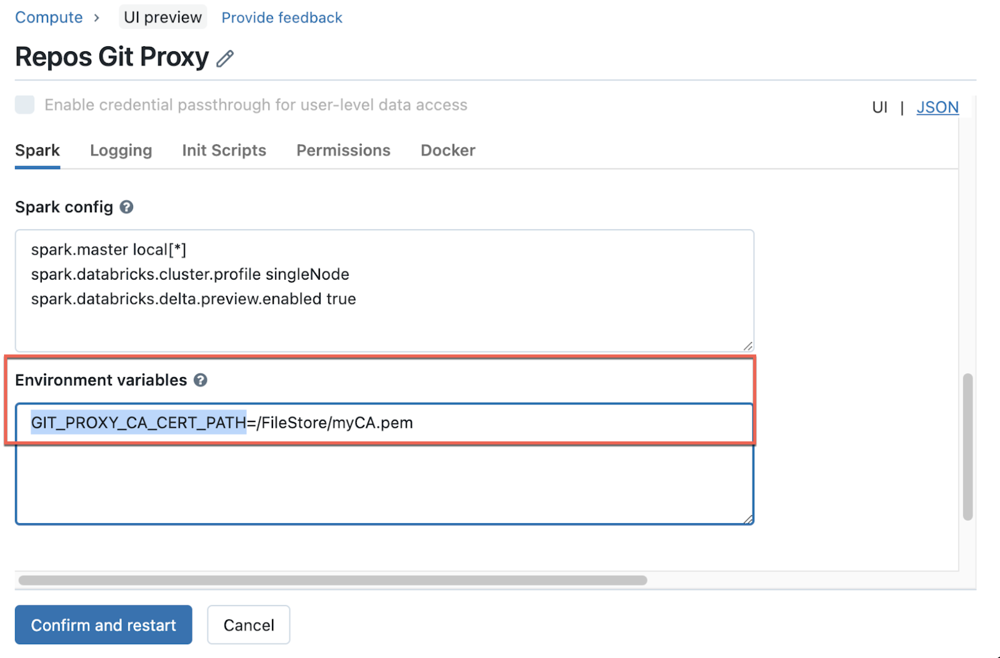

Git Server Proxy for Databricks Repos
Learn about and configure Git Server Proxy for Databricks Repos, which enables you to proxy Git commands from Databricks Repos to your on-premises repos served by GitHub Enterprise Server, Bitbucket Server, and GitLab self-managed.
Preview
This feature is in Public Preview.
What is Git Server Proxy for Databricks Repos?
Databricks Git Server Proxy for Databricks Repos is a feature that allows you to proxy Git commands from your Databricks workspace to an on-premises Git repo that you manage.
Databricks Repos represents your connected Git repos as folders. The contents of these folders are version-controlled by syncing them to the connected Git repository. By default, Databricks Repos can synchronize only with public Git providers (like public GitHub, GitLab, Azure DevOps, and others). However, if you host your own on-premises Git server (such as GitHub Enterprise Server, Bitbucket Server , or GitLab self-managed), you must use Git Server Proxy with Databricks Repos to provide Databricks access to your Git server. Your Git server must be accessible from your Databricks data plane (driver node).
Note
Currently, Databricks Repos can contain only Databricks notebooks and sub-folders, along with a specific set of other asset types. For a current list of supported asset types, see Limits & FAQ for Git integration with Databricks Repos.
How does Git Server Proxy for Databricks Repos work?
Git Server Proxy for Databricks Repos proxies Git commands from the Databricks control plane to a “proxy cluster” running in your Databricks workspace’s compute plane. In this context, the proxy cluster is a cluster configured to run a proxy service for Git commands from Databricks Repos to your self-hosted Git repo. This proxy service receives Git commands from the Databricks control plane and forwards them to your Git server instance.
The diagram below illustrates the overall system architecture:
Important
Databricks provides an enablement notebook you can run to configure your Git server instance to proxy commands for Databricks Repos. Get the enablement notebook on GitHub.
How do I set up Git Server Proxy for Databricks Repos?
This section describes how to prepare your Git server instance for Git Server Proxy for Databricks Repos, create the proxy, and validate your configuration.
Before you begin
Before enabling the proxy, consider the following prerequisites and planning tasks:
Your workspace has the Databricks Repos feature enabled.
Your Git server instance is accessible from your Databricks workspace’s compute plane VPC, and has both HTTPS and personal access tokens (PATs) enabled.
Step 1: Prepare your Git server instance
To configure your Git server instance:
Give the proxy cluster’s driver node access your Git server.
Your enterprise Git server can have an
allowlistof IP addresses from which access is permitted.Associate a static outbound IP address for traffic that originates from your proxy cluster. You can do this by proxying traffic through a NAT gateway.
Add the IP address from the previous step to your Git server’s allowlist.
Set your Git server instance to allow HTTPS transport.
For GitHub Enterprise, see Which remote URL should I use in the GitHub Enterprise help.
For Bitbucket, go to the Bitbucket server administration page and select server settings. In the HTTP(S) SCM hosting section, enable the HTTP(S) enabled checkbox.
Step 2: Run the enablement notebook
To enable the proxy:
Log into your Databricks workspace as a workspace admin with access rights to create a cluster.
Import this notebook:
Enable Git Server Proxy for Databricks Repos for private Git server connectivity in Repos.
Select “Run All” to perform the following tasks:
Create a single node cluster named “Repos Git Proxy”, which does not auto-terminate. This is the “proxy cluster” that will process and forward Git commands from your Databricks workspace to your on-premises Git server.
Enable a feature flag that controls whether Git requests in Databricks Repos are proxied via the cluster.
Important
You must be an admin on the workspace with access rights to create a cluster.
Note
You should be aware of the following:
By default, all users in the Databricks workspace are given attach permissions to the cluster that is created by the notebook. You can control access to the cluster as you see fit. Users need attach permissions to use Databricks Repos in this setup.
Running an additional long-running cluster to host the proxy software incurs extra DBUs. To minimize costs, the notebook configures the proxy to use a single node cluster with an inexpensive node type. However, you might want to modify the cluster options to suit your needs.
Step 3: Validate your Git server configuration
To validate your Git server configuration, try to clone a repo hosted on your private Git server via the proxy cluster. A successful clone means that you have successfully enabled Git Server Proxy for your workspace.
Step 4: Create proxy-enabled repos
After users configure their Git credentials, no further steps are required to create or synchronize your repos. To configure credentials and create a repo in Databricks Repos, see Configure Git credentials & connect a remote repo to Databricks.
Troubleshooting
Did you encounter an error while configuring Git Server Proxy for Databricks Repos? Here are some common issues and ways to diagnose them more effectively.
Checklist for common problems
Before you start diagnosing an error, confirm that you’ve completed the following steps:
Confirm that your proxy cluster is running.
Confirm that your Databricks Repos users have “attach to” permissions on the proxy cluster.
Run the enablement notebook again and capture the results, if you haven’t already. If you are unable to debug the issue, Databricks Support can review the results. You can export and send the enablement notebook as a DBC archive.
Inspect logs on the proxy cluster
The file at /databricks/git-proxy/git-proxy.log on the proxy cluster contains logs that are useful for debugging purposes.
The log file should start with the line Data-plane proxy server binding to ('', 8000)… If it does not, this means that the proxy server did not start properly. Try restarting the cluster, or delete the cluster you created and run the enablement notebook again.
If the log file does start with this line, review the log statements that follow it for each Git request initiated by a Git operation in Databricks Repos.
For example:
do_GET: https://server-address/path/to/repo/info/refs?service=git-upload-pack 10.139.0.25 - - [09/Jun/2021 06:53:02] /
"GET /server-address/path/to/repo/info/refs?service=git-upload-pack HTTP/1.1" 200`
Error logs written to this file can be useful to help you or Databricks Support debug issues.
Common error messages and their resolution
Secure connection could not be established because of SSL problems
You might see the following error:
https://git.consult-prodigy.com/Prodigy/databricks_test: Secure connection to https://git.consult-prodigy.com/Prodigy/databricks_test could not be established because of SLL problems
Often this means that you are using a repository that requires special SSL certificates. Check the content of the
/databricks/git-proxy/git-proxy.logfile on the proxy cluster. If it says that certificate validation failed, then you must add the certificate of authority to the system certificate chain. First, extract the root certificate (using the browser or other option) and upload it to DBFS. Then, edit the Repos Git Proxy cluster to use theGIT_PROXY_CA_CERT_PATHenvironment variable to point to the root certificate file. For more information about editing cluster environment variables, see Environment variables.After you have completed that step, restart the cluster.
Failure to clone repository with error “Missing/Invalid Git credentials”
First, check that you have configured your Git credentials in User Settings.
You might encounter this error:
Error: Invalid Git credentials. Go to User Settings -> Git Integration and check that your personal access token or app password has the correct repo access.
If your organization is using SAML SSO, make sure the token has been authorized (this can be done from your Git server’s Personal Access Token (PAT) management page).
Additionally, check that all users have “can attach” permissions on the Git proxy cluster.
Frequently asked questions
What are the security implications of the Git server proxy?
The most important things to know are:
Proxying does not affect the security architecture of your Databricks control plane.
In the current release, the proxy can open new attack vectors for privileged users. To reduce complexity and the potential for attacks, you can only have one Git proxy server cluster per workspace at this time.
Does the Git proxy feature work with other Git enterprise server providers?
Databricks Repos supports GitHub Enterprise, Bitbucket Server, Azure DevOps Server, and GitLab self-managed. Other enterprise Git server providers should work as well if they conform to common Git specifications.
Is the use of a non-default HTTPS port on the Git server supported?
Currently, the enablement notebook assumes that your Git server uses the default HTTPS port 443. You can set the environment variable GIT_PROXY_CUSTOM_HTTP_PORT to overwrite the port value with a preferred one.
Does the proxy work with legacy single-notebook versioning?
No, the proxy does not work with legacy single-notebook versioning. Users must migrate to Databricks Repos versioning.
Can Databricks hide Git server URLs that are proxied? Could users enter the original Git server URLs rather than proxied URLs?
Yes to both questions. Users do not need to adjust their behavior for the proxy. With the current proxy implementation, all Git traffic for Databricks Repos is routed through the proxy. Users enter the normal Git repo URL such as https://git.company.com/org/repo-name.git.
How often will users work with the Git URLs?
Typically a user would just add the Git URL when they create a new repo or check out an existing repo that they have not already checked out.
Does the feature transparently proxy authentication data to the Git server?
Yes, the proxy uses the user account’s Git server token to authenticate to the Git server.
Is there Databricks access to Git server code?
The Databricks proxy service accesses the Git repository on the Git server using the user-provided credential and synchronizes any code files in the repository with the repo. Access is restricted by the permissions specified in the user-provided personal access token (PAT).